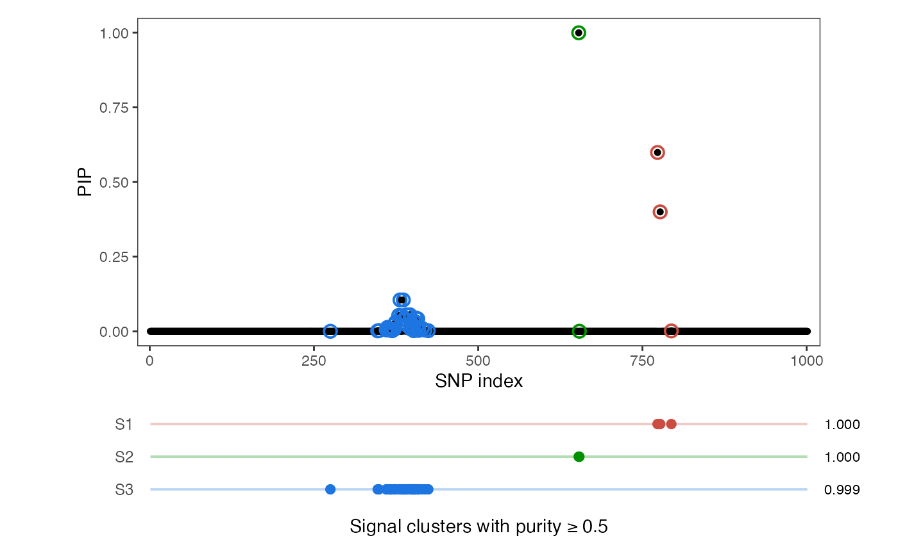

Introduction
This vignette demonstrates how to visualize posterior inclusion
probabilities (PIPs), signal clusters and credible sets from
DAPS using the daps_plot() function.
The main plotting function produces a two-panel figure:
- Top panel: SNP-level posterior inclusion probabilities
- Bottom panel: Signal clusters or credible sets, showing cluster indices on the left and cluster-level posterior probabilities (CPIP) or coverage probabilities on the right
Example
We illustrate the workflow using the N3finemapping
example dataset from susieR. DAPS can visualize these
results directly:
library(DAPS)
library(susieR)
X <- N3finemapping$X
Y <- N3finemapping$Y[, 1]
fitted <- daps(X, Y, L = 10)
daps_plot(fitted)
Summary
The daps_plot() function provides a clear and compact
visualization of fine-mapping results, making it easy to explore:
- SNP-level PIP patterns
- Signal clusters or credible sets
- CPIP or coverage probabilities
This enables effective interpretation of DAP-S or SuSiE output in genomic studies.